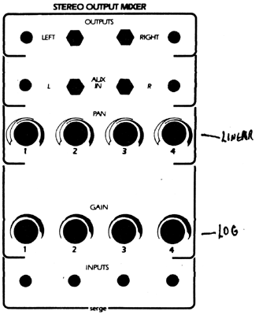
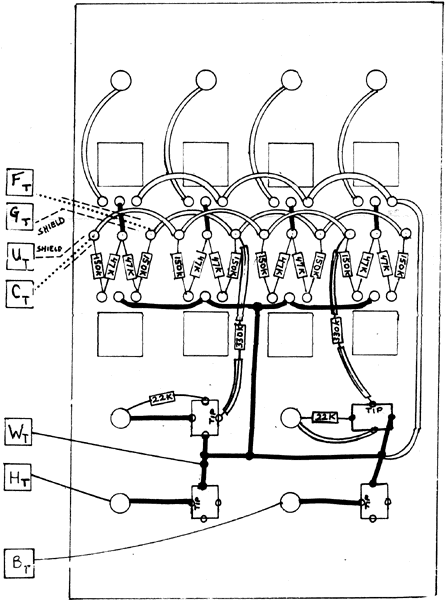

|

Stereo Output MixerParts -for Kit
Align the mini-jacks with the TIP connection oriented as shown (there are three different connections on the mini-Jacks: two shield connections, one TIP, and one SHUNT. Using epoxy glue (obtainable at any hardware store), glue the barrier- strips in a line as shown, so that there is a little more than 1/2 inch clearance between the lugs of the potentiometers and the terminal strips. Always use the shortest distance possible when making connections. The center lugs of the linear pots may be bent dowin so that the ground buss wire can go in a straight line through these connections. Make sure that there is clearance from the other lugs. It is easiest if the solid buss wires are installed first, then the insulated hook-up wire, then the resistors. Shielded cable is shown in the diagram as a center conductor (dotted line) and the shield strands (dashed lines). The shield gets connected to the PC board end nearly, so the shield end near the panel should be trimmed away and covered with tape. After wiring to the barrier strip inspect it closely to see that no bare wires or solder stick out above the top edge of the strip. It is suggested that the lugs be bent down somewhat to avoid possible shorts against the PC boards when they are folded onto the panel. When external signals are plugged into the auxiliary inputs at the mini-Jacks, the system inputs (banana Jacks) are automatically disconnected. 
|